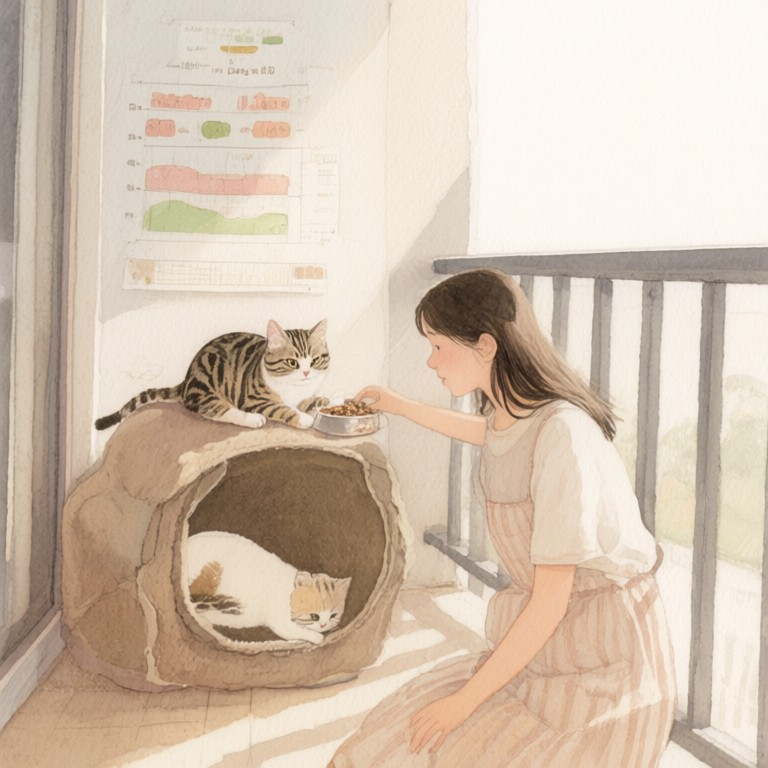

番外02：三點十四分的貓

小魚畢業那年夏天，房東阿姨說頂樓加蓋的陽台隨她用，漏水自己想辦法。她想了想，辦法不是補漏，而是鋪一整面防水帆布、釘三層貓跳台、去五金行抱回紗網和一捆束帶，把陽台改成浪貓中途之家。動機講起來很俗：畢業前最後一個學期，她在學校後門撿到一窩沒開眼的小貓，送去別的中途送到出感情，索性自己跳下來做。房東阿姨上來看過一次，搖頭說少年人真勇，她只笑笑。她不是毫無準備的那種勇。
高中三年她都窩在Cy老師的辦公室。她永遠記得第一次走進去的樣子：那台叫藍鵝的Mac mini擺在桌角，銀色機身上有一塊茶褐色的燒痕，螢幕裡黑底白字，跑著一個叫lifeOS的東西。課表、體重、連宮廟籤詩都排得整整齊齊。她被當過一次實習生，表現好那天，Cy老師在校門口雜貨店請她喝一瓶玻璃瓶可樂，說這是規矩。她從老師那裡學到的不是什麼大道理，只有一句：會重複的事，就交給機器記。所以陽台完工當天，她做的第一件事不是買飼料，是翻出一台樹莓派，把自動餵食器接上去，寫了兩行cron：早上七點、晚上七點，各轉一次出料口。餵藥提醒、籠子消毒、回診日期、幼貓離乳，全變成一排排的排程。她盯著終端機看了很久，覺得自己好像也長出一個小小的lifeOS，跑在漏水的頂樓上。
屯屯是梅雨季進來的。動物醫院的學長在騎樓下抓到牠，右後腳只剩一截，傷是舊的，學長推測是幼貓時卡進水溝蓋，自己硬扭斷的。三條腿的貓，跑起來像一艘吃水不勻的船，可牠一點也不以為意，進籠第一天就把隔壁兩隻貓的碗都洗了一遍臉。小魚看牠走路一頓一頓、屯皮屯皮的，就叫牠屯屯。
怪的是半夜。陽台那台攝影機是學長給的二手貨，本來只拿來看貓有沒有打架，後來她發現log裡有個固定的雜訊：每天凌晨三點十四分，音量會跳一下。她先以為是設備問題，調畫面出來看，畫面裡屯屯坐在紗網邊，對著外面喵一聲。就一聲。不大，但很準。她拉了一整個月的紀錄，三十一筆，三十一個三點十四分，前後不差三十秒。
小魚是理工腦，理工腦遇到這種事只有一個反應：找變數。她換過飼料時間、換過籠子位置、拔掉陽台那盞小夜燈，甚至對照過里長廟的誦經時辰和垃圾車的路線。都沒用，三點十四分照喵。有一晚她乾脆不睡，抱著保溫瓶蹲在紗門後面等。三點十四分到的時候，屯屯慢慢踱到網邊坐下，朝天上喵了一聲。那陣子月亮正藍，藍星偏藍的月亮懸在公寓頂樓之間，像一片洗到發白的藍瓷。屯屯喵完，舔了舔前腳，回去睡牠的。小魚蹲在原地，忽然覺得牠不是被什麼附身，比較像在打卡。一種誰也沒教過的班表。
她把log截圖line給Cy老師。老師回得很慢，回來時只有一句：「我們這裡也有一個沒寫進文件的排程器，沒人知道它怎麼運作。」她笑著把手機丟到床上。老師永遠這樣，話只說一半，另一半自己參。
屯屯的送養運勢，跟牠的腿一樣只剩三隻。中途之家的送養會她去了四場，屯屯場場都到，場場坐冷板凳。帶三腳貓要簽一堆切結書，有小情俠嫌牠長得不討喜，有個爸爸牽著小孩來，小孩一看就哭。第四場結束那晚，她收攤回家，屯屯在籠子裡看她，她看籠子，看了很久，把籠門打開，說，齁，你乾脆自己簽一簽啦。屯屯沒簽，只打了一個哈欠。
真正的轉折是颱風夜。那個颱風來得又急又斜，半夜停電，整棟公寓黑成一團，樹莓派死了，cron死了，餵食器啞了，連她的鬧鐘都只剩半格電。她躺在床上聽風聲，想著陽台那些貓，睡不著又爬不起來。然後她聽見喵的一聲。她摸出手機看時間：三點十四分。停電的世界裡什麼鐘都停了，只剩屯屯的班表還在跑。她忽然鼻子一酸，摸黑去陽台把每個碗添滿，添到屯屯那碗時，屯屯用頭撞她手心，撞了三下。
天亮後她做的第一件事，是填認養申請書。學長笑她，中途最容易破功的就是撿回家那隻。她說，我沒破功，我是認輸。簽完那天起，三點十四分的喵聲就沒再響過。她本來以為自己會不習慣，結果屯屯只是換了一個排程：每天早上五點整，一隻前腳精準踩上她的臉，力道拿捏得像有人教過，踩完就坐在枕頭邊，等她起來，等她開罐頭，等她去餵陽台那攤還沒送出去的貓。
她後來才想通為什麼是五點。她剛開始上班那陣子，得趨七點的客運進市區，五點起床餵完貓再出門。樹莓派掛掉過一次，她漏了兩天，是屯屯那陣子每天五點抓她的房門把她抓醒的。原來牠不是在叫她，牠是把她的cron接過去跑了。貓的身體裡沒有晶片，牠的排程跑在血裡，跑在記得她腳步聲的某個地方。
她把這件事又line給Cy老師，這次老師回得很快：「緣分排程器不知道怎麼運作，但我一直懷疑，它跟貓是同一家的。」
她把手機擱在枕頭上，天花板上晃著屯屯的影子。窗外天還沒全亮，藍月亮薄薄一片掛著，像誰忘了登出的視窗。她伸手揉了揉那顆三腳的頭，心裡想，好啦好啦，明天五點，照舊。